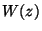
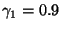
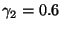
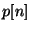
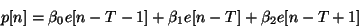
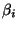
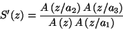
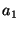
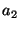
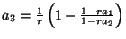

This section looks at how Speex works for narrowband ( sampling rate) operation. The frame size for this mode is , corresponding to 160 samples. Each frame is also subdivided into 4 sub-frames of 40 samples each.
Also many design decisions were based on the original goals and assumptions:
An LPC analysis is first performed on a (asymetric Hamming) window
that spans all of the current frame and half a frame in advance. The
LPC coefficients are then converted to Line Spectral Pair
(LSP), a representation that is more robust to quantization. The LSP's
are considered to be associated to the  sub-frames and the
LSP's associated to the first 3 sub-frames are linearly interpolated
using the current and previous LSP's.
sub-frames and the
LSP's associated to the first 3 sub-frames are linearly interpolated
using the current and previous LSP's.
The LSP's are encoded using 30 bits for higher quality modes and 18 bits for lower quality, through the use of a multi-stage split-vector quantizer. For the lower quality modes, the 10 coefficients are first quantized with 6 bits and the error is then divided in two 5-coefficient sub-vectors. Each of them is quantized with 6 bits, for a total of 18 bits. For the higher quality modes, the remaining error on both sub-vectors is further quantized with 6 bits each, for a total of 30 bits.
The perceptual weighting filter

used by Speex is derived from the LPC filter
and
. We can use the unquantized
Speex uses a 3-tap prediction for pitch. That is, the pitch prediction signal

is obtained by the past of the excitation by:
where is the pitch period and the

are the prediction (filter) taps. It is worth noting that when the pitch is smaller than the sub-frame size, we repeat the excitation at a period . For example, when , we use instead. The period and quantized gains are determined in closed loop (analysis-by-synthesis). In most modes, the pitch period is encoded with 7 bits in the range and the coefficients are vector-quantized using 7 bits (15 kbps narrowband and above) at higher bit-rates and 5 bits at lower bit-rates (11 kbps narrowband and below).
In Speex, the innovation signal is quantized using sub-vector shape-only vector quantization (VQ). That means that the innovation signal is divided in sub-vectors (of size 5 to 20) and quantized using a codebook that represents both the shape and the gain at the same time. This saves many bits that would otherwise be allocated for a separate gain at the price of a slight increase in complexity.
There are 7 different narrowband bit-rates defined for Speex, ranging from 250 bps to 24.6 kbps, although the modes below 5.9 kbps should not be used for speech. The bit-allocation for each mode is detailed in table 3. Each frame starts with the mode ID encoded with 4 bits which allows a range from 0 to 15, though only the first 7 values are used (the others are reserved). The parameters are listed in the table in the order they are packed in the bit-stream. All frame-based parameters are packed before sub-frame parameters. The parameters for a certain sub-frame are all packed before the following sub-frame is packed. Note that the ``OL'' in the parameter description means that the parameter is an open loop estimation based on the whole frame.
|
So far, no MOS (Mean Opinion Score) subjective evaluation has been performed for Speex. In order to give an idea of the quality achivable with it, table 4 presents my own subjective opinion on it. It sould be noted that different people will perceive the quality differently and that the person that designed the codec often has a bias (one way or another) when it comes to subjective evaluation. Last thing, it should be noted that for most codecs (including Speex) encoding quality sometimes varies depending on the input. Note that the complexity is only approximate (within 0.5 mflops and using the lowest complexity setting). Decoding requires approximately 0.5 mflops in most modes (1 mflops with perceptual enhancement).
This part of the codec only applies to the decoder and can even be
changed without affecting inter-operability. For that reason, the
implementation provided and described here should only be considered
as a reference implementation. The enhancement system is divided into
two parts. First, the synthesis filter  is replaced
by an enhanced filter
is replaced
by an enhanced filter


and
depend on the mode in use and
with . The second part of the enhancement consists of using a comb filter to enhance the pitch in the excitation domain.